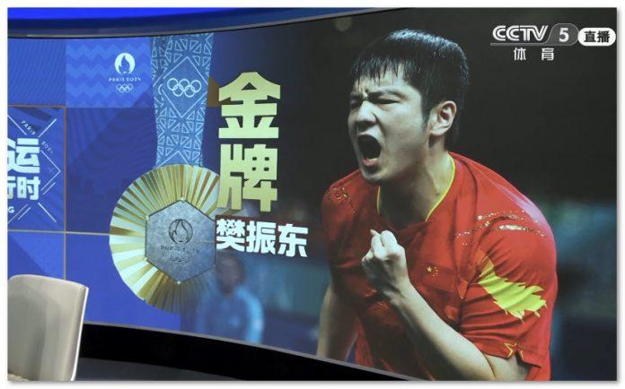
刚刚结束的巴黎奥运会乒乓球男单决赛，中国选手樊振东对阵瑞典选手莫雷高德，大比分4:1夺冠。
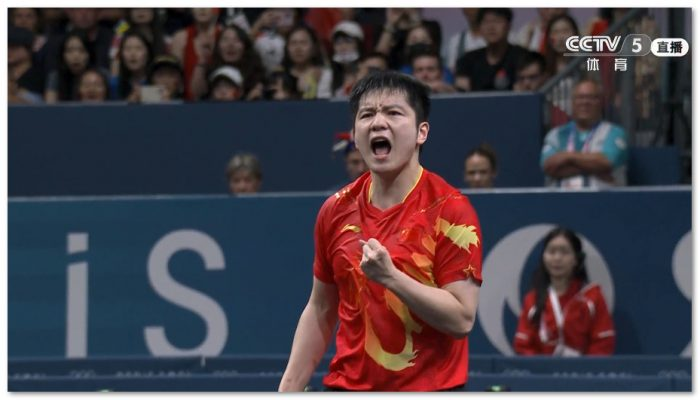
樊振东1997年广州出生，父母是普通工人。2008年入选八一乒乓球队，曾经夺得世界青少年乒乓球锦标赛男团、男单和混双冠军。2013年入选国家队。获得过多个世乒赛世界冠军。
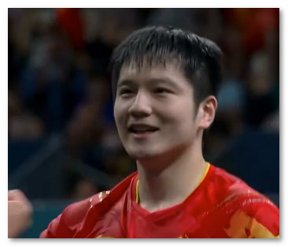
因为略胖并且幽默的性格被网友昵称小胖。
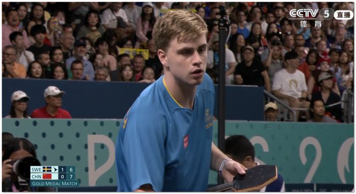
22岁的莫雷高德来自传统的乒乓球强国瑞典，被誉为天才少年。启蒙教练是自己的父亲，所用球拍为六边形。也被称为名将瓦尔德内尔的接班人。老瓦也曾经预言小莫将会进入世界顶级选手之列。目前他世界排名第17位。
<
p id=”2TDUKDL5″>与正常的球拍相比，特殊的六边形球拍面积要大5%，击球区域对于横拍来说大11%，对于直拍来说要大9%。
第一局，双方比分紧咬，在7:7平后莫雷加德连得4分，11-7拿下首局。
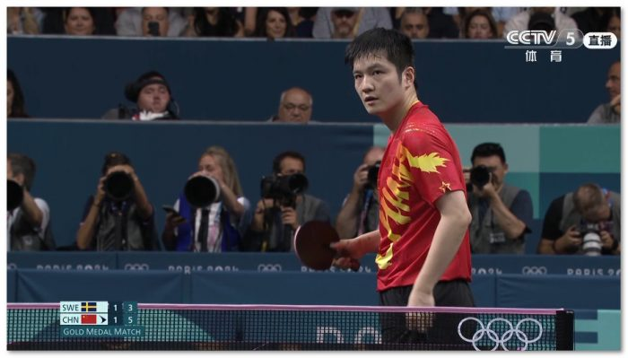
第二局，樊振东11-9拿下第二局，双方大比分战成1:1平。
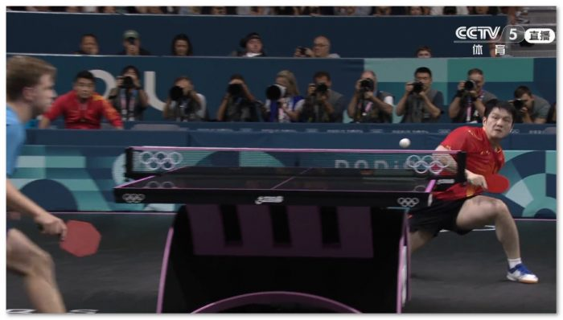
第三局，樊振东11-9小莫拿下第三局，大比分2:1领先。
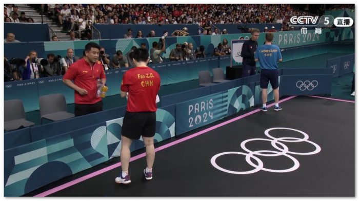
第四局，樊振东11-8再度战胜小莫，大比分3:1领先。樊振东的教练王皓和小莫的教练佩尔森也曾经是比赛中的对手。
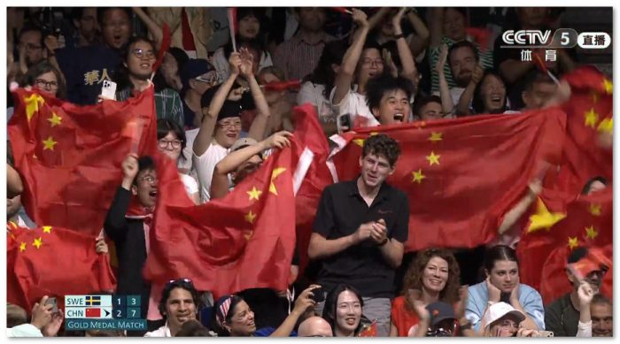
比赛中出现多拍超级对抗。观众热烈鼓掌。
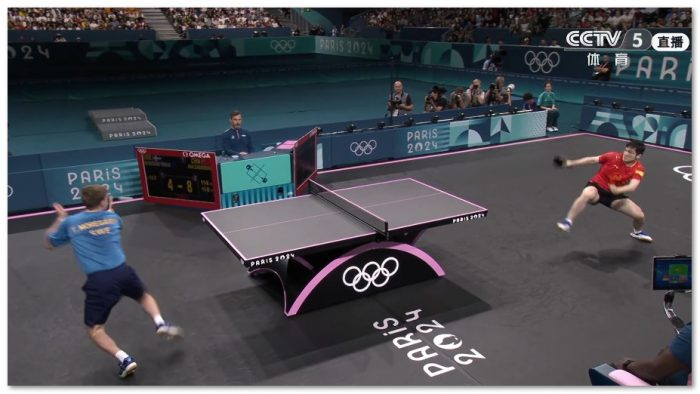
第五局，小莫似乎心态崩了，开局1:7落后。最终樊振东11-7小莫，大比分4:1获得本届奥运会的男单金牌。
樊振东成为国乒历史上第10位大满贯球员，这十位球员分别是：刘国梁、孔令辉、张继科、马龙、樊振东、邓亚萍、王楠、张怡宁、李晓霞和丁宁。
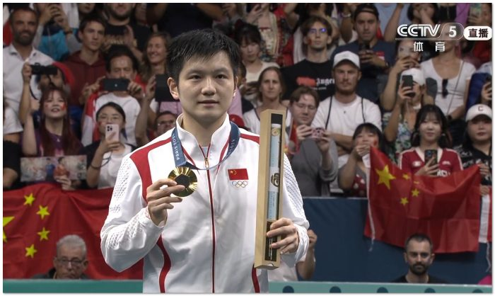
赛后樊振东表示：比赛让自己很释放！球场的氛围让我很震撼，像在看足球。做好自己全力以赴全力争胜！
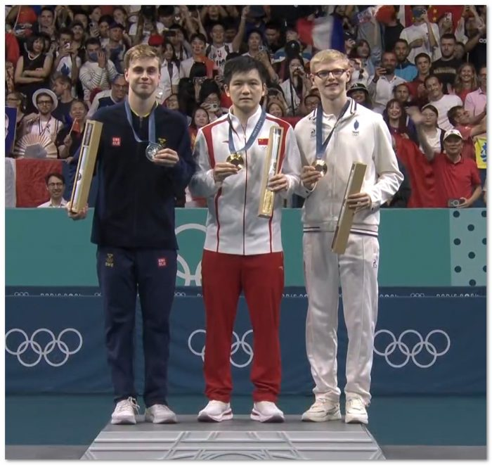
瑞典小莫获得银牌。法国18岁小将勒布伦获得铜牌。
（言西早 图 视频截图）